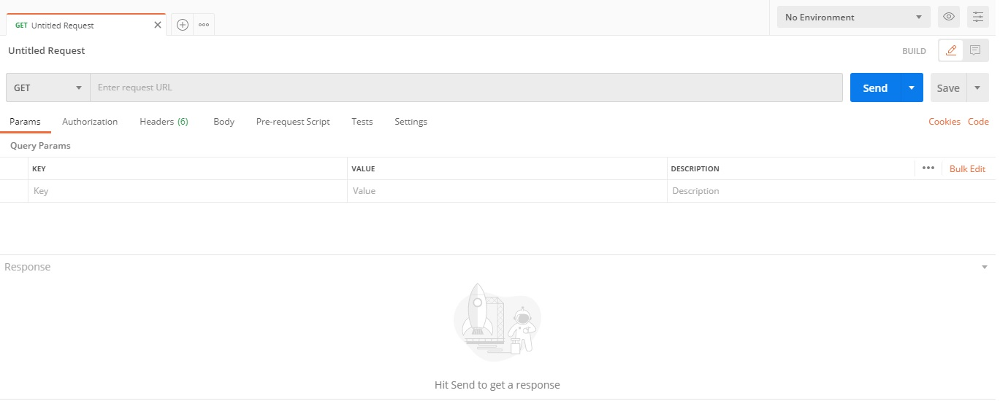
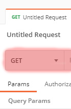
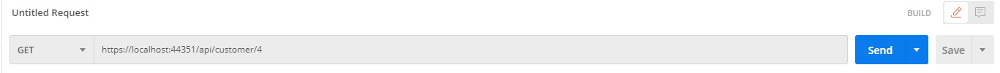
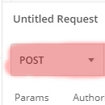
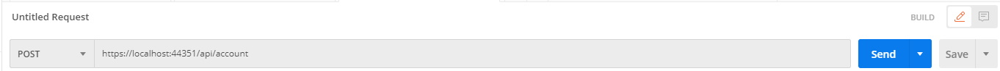
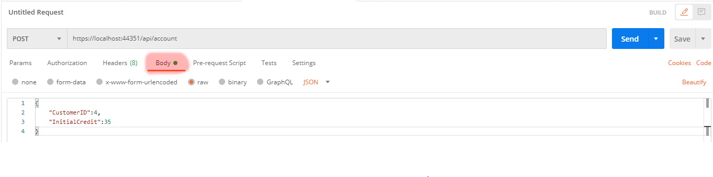

Postman is a scalable API testing tool that quickly integrates into CI/CD pipeline.
Being an open source tool, Postman can be easily downloaded from here. After downloading it, click the .exe installer and follow the instructions it provides. Once Postman is installed, you need to close all the welcome messages and you will see a screen like this one:
Postman home view
For the purpose of this assignment I created a GET endpoint that retrieves the data associated with a Customer ID. There are six different customers, with IDs ranging from 1 to 6, loaded in the InMemory database. Any of them can be used for testing purposes.
In order to test the GET request you need to leave the CustomerAPI app running, and then, in Postman you need to follow these steps:
Ensure that the request method is set to GET, as seen below:
Postman GET method
Type this URL:"https://localhost:44351/api/customer/《add_desired_customer_id_here》" into the "Enter request URL" section. Your full request should look like this:
Postman complete GET method
Press "Send". If everything went well, you should see the customer data in the "Response" section of the app.
For the purpose of this assignment I created a POST endpoint that creates a new account for a Customer ID and an Initial Balance. If the Initial Balance is greater than 0, than a new transaction for the account is created as well. There are six different customers, with IDs ranging from 1 to 6, loaded in the InMemory database. Any of them can be used for testing purposes.
In order to test the POST request you need to leave the CustomerAPI app running, and then, in Postman you need to follow these steps:
Ensure that the request method is set to POST, as seen below:
Postman POST method
Type this URL:"https://localhost:44351/api/account" into the "Enter request URL" section. Your full request should look like this:
Postman POST method URL
Select the "Body" tab under the request data and insert the following JSON data:
{
"CustomerID":《add_desired_customer_id_here》,
"InitialCredit":《add_desired_customer_id_here》
}
After following all the steps your Postman your window should look similar to this:

Postman complete POST method
Press "Send". If everything went, well you should see the account data in the "Response" section of the app.